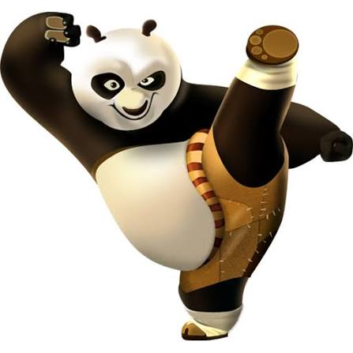

Pictures
Favourite General Conference Talk: Master Oogway tallk.

Answers to Questions.
What kind of of photos are good to encode JPEG?
Photos that have been taken with a digital camera or include a lot of colors and details.
What kind of photos are good to encode using GIF?
Photos that supports a low color palette and simple frame by frame animations. Short, lightweight animated memes or basic web
What is unique about the PNG format?
PNG is great with pictures that have transparent backgrounds for example icon images, logos, graphics.
How do you resize your photo to the size it should be displayed?
Use css to help adjust the size. Or a photo editing software to resize the image to the size it should be displayed.
Why should you resize photos using photo editing software instead of resizing it using CSS?
CSS only changes the display dimensions of an image, not its actual file size.